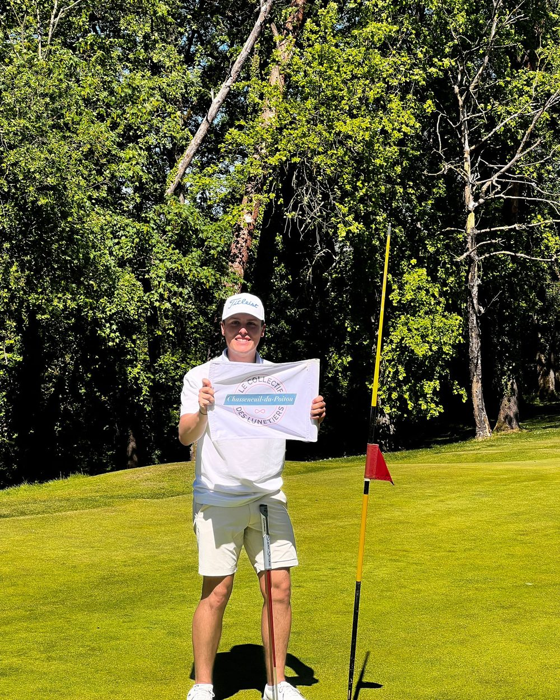

Rigueur
Quinze Grands Prix planifiés, réservés et budgétés un an à l'avance.
Golfeur amateur de compétition au Golf de La Prée La Rochelle
au Mérite National Amateur, en une saison. Index −3,2, premier tiers des 1 119 joueurs classés en France.
Je suis né à Bordeaux et je joue au Golf de La Prée La Rochelle. En parallèle de ma saison de compétition, je suis ingénieur en construction, formé au CESI.
Je ne cherche pas à vivre du golf. Je mène deux projets de front avec la même méthode : entraînements calés sur un emploi du temps professionnel, saison planifiée et budgétée un an à l'avance, logistique et financement gérés de bout en bout.
En 2026, cette méthode a produit des résultats : deux deuxièmes places en Grand Prix, la montée de mon club en 2e division du Championnat de France par équipes, et 622 places gagnées au classement national.

Quinze Grands Prix planifiés, réservés et budgétés un an à l'avance.
Cinq heures de jeu, deux jours d'affilée. 72-69 au Grand Prix de La Prée en septembre.
Choisir le coup juste, pas le coup spectaculaire. Une moyenne par rapport au SSS presque divisée par deux sur les six derniers mois.
De la 951e à la 329e place nationale en une saison, mois après mois.
Toutes les compétitions comptant pour le Mérite National Amateur, avec les scores de chaque tour. Les places entourées sont les tops 5.
| Date | Compétition | T1 | T2 | T3 | Place | vs SSS |
|---|---|---|---|---|---|---|
| Chargement des résultats… | ||||||
Source : Mérite National Amateur, ffgolf, édition de novembre 2026.
Une quinzaine de Grands Prix en Nouvelle-Aquitaine et en Occitanie, et le Championnat de France par équipes en 2e division.
Les personnes qui m'accompagnent au quotidien.
Vous souhaitez m'accompagner dans ma saison 2027 ? Que vous soyez un particulier, une entreprise ou une marque, prenons contact : nous trouverons ensemble la façon de le faire qui vous correspond, qu'il s'agisse de matériel, d'un soutien sur les déplacements, d'une mise en relation ou d'un partenariat.
Me contacter pour m'accompagner
Une question, une proposition, l'envie de suivre ou de soutenir ma saison : laissez-moi un message, je vous réponds sous 48 heures.